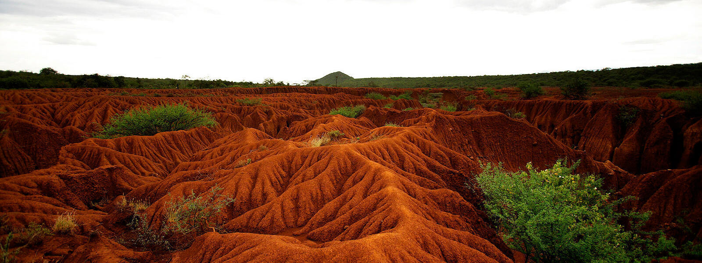

Historical Instances about Erosion
One would believe that soil erosion has only been a concern since we began modifying age-old agricultural techniques by utilizing pesticides and mass-producing crops to feed the world's rising population. That, however, is not the case.
Soil erosion by water and wind has occurred naturally since the Silurian Period when the first land plants generated the first soil. Accelerated erosion has a very recent geological origin; nevertheless, accelerated erosion is quite old on a human timeline. There is substantial archaeological evidence from various regions of the world that suggests that rapid erosion by water is frequently related to early agriculture. In reality, all civilizations throughout history have struggled with soil erosion and have fallen as a result.
The ancient Middle Eastern civilizations made significant advances in warfare, law and order, and science. They have, however, succumbed to the challenges of deforestation, soil erosion, and salt accumulation.
Simeria was a prosperous and thriving civilization in about 2700 BC. However, by 2100 BC, the civilization had collapsed to bad land management. As these civilizations moved north towards Assyria and Babylonia, they didn't appear to learn and kept making the same mistakes.
Troy encountered a similar predicament in 1200 BC. Throughout the Trojan rule, deforestation and erosion caused the shoreline to change regularly. Only when this development was taken into consideration was the city found in 1870.
Simultaneously, the Greek coastal settlements immediately east of Troy were becoming landlocked as soil erosion and sedimentation increased.
Central American city-states followed the beautiful heritage of eroding soils all over the planet. From 1700 to 1500 BC, civilizations flourished and perished slowly.
Indeed, the issues of soil erosion appear to have afflicted civilizations that had developed advanced agricultural systems in association with excessive deforestation. Both were a direct outcome of the increasing population, and both contributed to the final downfall of that society.
Jared Elliot noticed soil erosion for the first time in the contemporary world in 1685. He documented his views in a series of writings, and he was particularly worried about water rushing down barren hillslopes. He was among the first in his time to perform soil conservation studies. He planted green crops to firm up and nourish the soil, as well as grasses and legumes for animal management.
While the West continued to adopt bad soil practices, human settlements in the East, particularly China and India, recognized the need for soil preservation and implemented many modern conservation strategies such as terracing, crop rotation, and the use of natural fertilizers. Early British immigrants documented their initial views of these places' steep slopes lined with terraces for cultivation.
However, western influences, along with the necessity to feed an ever-increasing population, have compelled these countries to abandon their ancient ways in favor of the short-term rewards of contemporary techniques.
The most important reason why history will continue to be significant as long as humans exist is to avoid repeating the same mistakes. However, for some reason, people tend to make them in innovative and significant ways.
Soil erosion and deforestation have claimed the lives of innumerable civilizations, including some well-known ones. If the existing world's agricultural system fails over and over, not only a civilization will purge into chaos but the whole world.